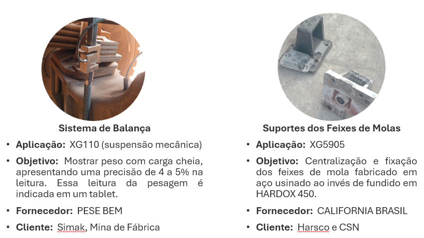

| CLIENTE | CORREDOR | MINA | MANAGER | REGIONAL ENGINEERING | SITE ENGINEERING | GENERAL MANAGER | REGIONAL MANAGER | SITE MANAGER | LEAD OPERATION |
|---|---|---|---|---|---|---|---|---|---|
| VALE | NORTE | CARAJÁS | Adriano Santana | Johnny Costa | Washington | Hallyson Ribeiro | |||
| S11D | Robert Cavalcante | Erick Leão | João Sergio | ||||||
| SUL | PICO | Em contratação | Thiago Petrucci | Leandro Chagas | |||||
| CSN | SUDESTE | CASA DE PEDRA | Em contratação | Marcelo Lopes | Marcelo Lopes |
JORNAL DA APLICAÇÃO
O PRIMEIRO NEWSLETTER DA ENGENHARIA DE APLICAÇÃO XCMG
Edição Setembro 2025 | Nº 001
Publicado em: XX de Setembro de 2025
XCMG BRASIL ACELERA EXPANSÃO COM NOVA ESTRUTURA ORGANIZACIONAL
Engenharia de Aplicação implementa sistema integrado de gestão para atender crescimento nas operações de mineração
STAKEHOLDERS: CONHEÇA NOSSA EQUIPE
MAPEAMENTO DE EQUIPE
Nova Estrutura Organizacional Fortalece Atendimento Nacional
Como a XCMG está se preparando para o futuro da mineração brasileira? Com uma reestruturação estratégica que posiciona profissionais especializados em cada região do país, garantindo suporte técnico de excelência e proximidade com os clientes.
📌 Mapeamento de Stakeholders
| MANAGER | REGIONAL ENGINEERING | SITE ENGINEERING |
|---|---|---|
| Adriano Santana | Power Train | Guilherme Souza |
| Adriano Santana | Elétrica | Antonio Carlos |
| Adriano Santana | Hidraulica | Jaime Evangelista |
| Adriano Santana | Software | Em contratação |
| Adriano Santana | Estrutural | Alan Patrik |
| Linha Amerela | Responsável | Observação |
|---|---|---|
| Market | Analista X | Relatórios semanais |
| Item | Responsável |
|---|---|
| Eventos, conteúdo e comunicação | Tiago Borges |
| Marketing | Responsável | Observação |
|---|---|---|
| Market | Analista X | Relatórios semanais |
ENGENHARIA DE PERFORMANCE
MONITORAMENTO DIÁRIO
Disponibilidade Física: A XCMG ao Lado dos Clientes, Dia a Dia
A XCMG Brasil mantém um compromisso inabalável com a performance de seus equipamentos em campo, realizando um acompanhamento diário e detalhado da Disponibilidade Física (DF) de suas máquinas nas operações dos clientes. Este monitoramento proativo permite à equipe de Engenharia de Aplicação identificar rapidamente tendências, atuar preventivamente e otimizar a operação, garantindo que os equipamentos XCMG entreguem o máximo de produtividade.
Desempenho Consolidado: Um Panorama de Excelência

O desempenho acumulado da DF em diversas frentes de trabalho demonstra a robustez e a confiabilidade dos equipamentos XCMG. Em um período recente, os resultados foram notáveis:
- CSN (28/08 a 03/09): Alcançou impressionantes 94,48% de DF, evidenciando a alta performance das máquinas neste cliente.
- R&D (28/08 a 03/09): Registrou uma DF de 90,32%, um indicativo da eficiência mesmo em ambientes de pesquisa e desenvolvimento.
- G3 (27/08 a 02/09): Apresentou uma sólida DF de 84,69%, confirmando a capacidade de entrega em operações intensas.
Vale Norte: Robustez em Diferentes Aplicações (28/08 a 03/09)


Vale Sudeste: Estabilidade e Pontos de Otimização (28/08 a 03/09)


Vale Sul: Desafios e Oportunidades (28/08 a 03/09)

COMUNICAÇÃO TÉCNICA
Logbook Digital Registra 1.200 Interações Técnicas
Como otimizar a comunicação entre Engenharia e Serviços? O Logbook Digital da XCMG centralizou todas as discussões técnicas, criando um histórico completo que reduziu em 40% o tempo de resolução de problemas complexos.
Implementado em agosto, o sistema já registrou mais de 1.200 interações técnicas entre as equipes de campo e engenharia corporativa.
TECNOLOGIA AVANÇADA
Sistema de Telemetria Processa 50 Mil Dados por Hora
Qual a revolução por trás do monitoramento XCMG? Um sistema de telemetria avançada que processa mais de 50 mil pontos de dados por hora, permitindo análises preditivas e otimização contínua da performance.
MELHORIA CONTÍNUA
Programa de Melhorias Gera Economia de R$ 2,3 Milhões
Como transformar dados em resultados financeiros?O programa de avaliação de melhorias da XCMG identificou e implementou 23 otimizações que geraram economia total de R$ 2,3 milhões...
RAMP-UP
Relatório Ramp-Up: 23 Equipamentos Atingem Performance Plena
Como acelerar a entrada em operação de novos equipamentos? O programa Ramp-Up da XCMG estabelece protocolos que reduzem em 50% o tempo para atingir capacidade operacional máxima...
PLANEJAMENTO
Cronograma de Viagens Otimiza Suporte Técnico Nacional
O sistema de planejamento considera urgência técnica, proximidade geográfica e agenda de manutenções. Em setembro, foram realizadas 12 viagens de emergência e 35 visitas programadas...
GESTÃO ESTRATÉGICA
Kickoff de Novos Equipamentos se Mostra Eficiente

Como a XCMG garante a entrega de equipamentos com excelência? Ao implementar um modelo estruturado de reuniões e acompanhamento interdepartamentais, reunindo times multidisciplinares para um comissionamento e entrega de qualidade.
Este processo otimiza a tomada de decisão, o acompanhamento de status e a homologação de novos equipamentos. Com reuniões semanais e painéis de Business Intelligence (BI), garantimos uma visão integrada e ágil, contribuindo para melhores resultados e o suporte ideal ao cliente.
MARCO HISTÓRICO
Gigante XE5600 Chega a Carajás: Um Novo Capítulo na Mineração Brasileira

Você já imaginou uma escavadeira de grande porte chegando para revolucionar a mineração? A XCMG marcou um passo histórico com a entrega da primeira XE5600 na Mina de Carajás. Um processo conduzido com rigor e precisão, garantindo excelência em cada etapa.
Toda a documentação foi organizada, planos de manutenção criados e a montagem executada com maestria. Essa entrega reforça nosso compromisso com eficiência, inovação e suporte total, consolidando a presença da XCMG no mercado nacional.
TESTES E VALIDAÇÕES
XCMG Acompanha de Perto Desempenho dos Caminhões XG110 na Vale

A XCMG Brasil, sempre atenta à performance de seus equipamentos e à satisfação de seus clientes, está realizando um acompanhamento detalhado de dois caminhões XG110 em operação nas minas da Vale. Um dos veículos está em atividade na mina de CPX, enquanto o outro opera na mina de Fábrica. O objetivo é monitorar de perto o desempenho em condições reais de trabalho, identificar pontos de melhoria e garantir a máxima eficiência para as operações de mineração.
Durante o mês de Agosto, na mina de CPX, o caminhão XG110 (TAG CA5602) tem demonstrado uma utilização física (UF) de 0,41, com uma média de 9,77 horas trabalhadas por dia. O consumo médio de combustível registrado é de 16,57 litros por hora. Durante o período de análise, foram identificadas 2 falhas, sendo uma relacionada ao furo de pneu e outra ao sistema de basculamento. Esses dados são cruciais para a equipe de engenharia da XCMG, que utiliza essas informações para aprimorar a aplicação e a manutenção dos veículos, visando reduzir o tempo de inatividade e otimizar o custo operacional.
Já na mina de Fábrica, o caminhão XG110 (TAG CA5601) apresentou uma utilização física (UF) de 0,06, com uma média de 1,52 horas trabalhadas por dia. O consumo médio de combustível foi de 11,69 litros por hora. Apenas 1 falha foi registrada, mas que perdurou durante praticamente todo o mês, devido a indisponibilidade do cliente em realizar a substituição do componente que falhou.
A XCMG reitera seu foco em oferecer equipamentos de alta performance e soluções inovadoras para o setor de mineração, garantindo que cada caminhão XG110 seja sinônimo de produtividade e confiabilidade.
NOVAS HOMOLOGAÇÕES
XCMG Anuncia Chegada de Frota Inovadora para 2026, Impulsionando a Sustentabilidade no Brasil
O futuro da infraestrutura e da logística brasileira está prestes a ganhar um novo capítulo. A XCMG Brasil anuncia a homologação e a iminente chegada de uma frota de equipamentos de ponta, com previsão de desembarque no final de 2025 e início de operações em 2026. Essa nova geração, que inclui as Empilhadeiras Elétricas XCB30-L2-C e o Terminal Tractor XPT90K – ambos cruciais para a otimização de operações portuárias –, além da Motoniveladora Elétrica GR350EP e do Caminhão Elétrico XGE150EV Plus, reforça o compromisso da XCMG com a inovação e a sustentabilidade no país.
O processo de homologação desses veículos segue a rigorosa metodologia de controle inicial da XCMG, que tem sido um pilar para o sucesso das entregas recentes. Essa abordagem garante não apenas a conformidade com os mais elevados padrões de qualidade e segurança, mas também a previsibilidade e a eficiência na comunicação entre as equipes. A homologação é um passo vital para assegurar que cada máquina esteja perfeitamente adaptada às condições operacionais brasileiras, prometendo desempenho superior e confiabilidade, especialmente em ambientes de alta demanda como os terminais portuários e as grandes obras de mineração.
Com a introdução desses modelos elétricos e de alta performance, a XCMG não só solidifica sua presença no mercado de mineração e construção, mas também expande sua atuação para setores estratégicos como a logística portuária, oferecendo soluções que respondem diretamente à crescente demanda por operações mais limpas e eficientes. Essa aposta em tecnologia de ponta e na eletrificação da frota reafirma a visão da XCMG em ser uma parceira fundamental para o desenvolvimento sustentável do Brasil, impulsionando a produtividade e contribuindo ativamente para um futuro mais verde em todas as frentes de operação.
INOVAÇÃO E QUALIDADE
Homologação de Componentes: A Chave para a Excelência na XCMG
Como se destacar em um mercado cada vez mais competitivo? A XCMG se destaca pela busca incessante por excelência e confiabilidade. Isso se reflete em seu rigoroso processo de homologação de componentes, um pilar estratégico que garante a qualidade, segurança e performance de seus equipamentos. Mais do que uma etapa técnica, a homologação impulsiona a inovação e a satisfação do cliente, assegurando que cada peça atenda aos mais altos padrões.
O processo de homologação na XCMG é meticuloso, iniciando-se com a solicitação e levantamento inicial de requisitos, seguido pela avaliação documental e planejamento detalhado. A execução de testes técnicos rigorosos simula condições reais de uso, avaliando durabilidade e funcionalidade. Após a análise criteriosa dos resultados, o componente é aprovado e registrado, com um acompanhamento pós-homologação contínuo para garantir sua performance ao longo do tempo. Este fluxo assegura a conformidade e a otimização de cada peça.
A homologação não se limita à conformidade; ela é um motor para o desenvolvimento de soluções inovadoras e personalizadas. Exemplos notáveis incluem o Sistema de Balança para a aplicação XG110, que oferece precisão de 4 a 5% na leitura de carga, otimizando operações para clientes como Simak e Mina de Fábrica. Outra inovação são os Suportes dos Feixes de Molas para o XG5905, fabricados em aço usinado HARDDOX 450, que garantem maior durabilidade e estabilidade para clientes como Harsco e CSN.
Esses casos demonstram como a Engenharia de Aplicação da XCMG, aliada ao processo de homologação, transforma desafios em oportunidades. Ao desenvolver componentes que superam as expectativas do mercado, a XCMG reafirma seu compromisso com a excelência, a inovação e o sucesso de seus clientes, consolidando sua posição na vanguarda da tecnologia e da eficiência.
INOVAÇÃO E DESENVOLVIMENTO
Portfólio de Homologação XCMG: Impulsionando a Performance e a Confiança
O portfólio de homologação da XCMG é um reflexo do compromisso contínuo da empresa com a qualidade e a inovação. Seu objetivo primordial é apresentar o status dos componentes, indicando se já foram homologados, se estão em fase de desenvolvimento e testes, ou se encontram em processo de homologação. Essa transparência e organização garantem que apenas os componentes mais robustos e eficientes sejam integrados aos equipamentos XCMG, assegurando a máxima performance e confiabilidade para os clientes.
Os componentes a serem homologados são categorizados em duas frentes principais: Desenvolvimento de Soluções e Projetos e Testes. Na categoria de Desenvolvimento de Soluções, destacam-se itens como Joystick para Carregadeiras, Contrapeso LW1200KN, Sistema de Lubrificação Automática para XGA5905, Parametrização do Eixo Diferencial XGA5905, Balança Caminhão de 3 Eixos, Balança XE2000, Assento Auxiliar XG90H e Suporte de Feixe de Molas XGA5905. Essas soluções visam aprimorar funcionalidades específicas e atender a demandas de mercado.
Já a categoria de Projetos e Testes abrange iniciativas cruciais como o Teste Vale - Caminhão XG110, Caminhões PIPA XGA5905 e XG90H-CSN, Bateria de Lítio Iônica para Equipamentos de Teste UG, XDE260-CSN e Caminhão Pipa de Mineração - XG110. Essas homologações são focadas em validar a performance e a segurança de equipamentos completos ou sistemas complexos em ambientes operacionais reais, muitas vezes em parceria com grandes clientes, como ilustrado pelas imagens de um contrapeso LW1200KN e um joystick.

Este portfólio dinâmico demonstra a capacidade da XCMG de não apenas atender, mas antecipar as necessidades do mercado, desenvolvendo e validando componentes que elevam o padrão da indústria. Através de um processo rigoroso e focado na inovação, a XCMG continua a fortalecer a confiança de seus clientes, entregando equipamentos de ponta que garantem eficiência e durabilidade em qualquer operação.
STATUS CRC
CRC
O CRC apresenta um status...
EFICIÊNCIA OPERACIONAL
RELATÓRIO DE VISITAS
47 Visitas Técnicas Identificam R$ 2,3 Mi em Oportunidades
Em setembro, 47 visitas técnicas especializadas identificaram 23 oportunidades de otimização que resultaram em economia potencial de R$ 2,3 milhões...
CONEXÃO E COMPROMETIMENTO
XCMG Intensifica Presença no Campo com Cronograma Estratégico de Visitas

Como a presença constante em campo fortalece a confiança e a performance nas operações de mineração? A XCMG Brasil reforça seu compromisso com a excelência operacional e a proximidade com seus clientes através de um cronograma de visitas e treinamentos intensificado. A agenda de setembro destaca a dedicação da equipe de Engenharia de Aplicação em estar lado a lado com as operações, garantindo suporte técnico de ponta e fortalecendo parcerias estratégicas em todo o país.
Entre os destaques, Antônio Ribeiro e Eduardo Teles, da equipe XCMG, estarão em Currais Novos, Rio Grande do Norte, de 08 a 12 de setembro, para uma visita crucial à G3. O objetivo é acompanhar de perto o Projeto Borborema, que envolve a operação de 10 unidades da escavadeira XG110. Essa presença no local é fundamental para otimizar a performance dos equipamentos e assegurar que as soluções XCMG atendam às demandas específicas do cliente.
Entre os destaques, Antônio Ribeiro e Eduardo Teles, da equipe XCMG, estarão em Currais Novos, Rio Grande do Norte, de 08 a 12 de setembro, para uma visita crucial à G3. O objetivo é acompanhar de perto o Projeto Borborema, que envolve a operação de 10 unidades da escavadeira XG110. Essa presença no local é fundamental para otimizar a performance dos equipamentos e assegurar que as soluções XCMG atendam às demandas específicas do cliente.
Entre os destaques, Antônio Ribeiro e Eduardo Teles, da equipe XCMG, estarão em Currais Novos, Rio Grande do Norte, de 08 a 12 de setembro, para uma visita crucial à G3. O objetivo é acompanhar de perto o Projeto Borborema, que envolve a operação de 10 unidades da escavadeira XG110. Essa presença no local é fundamental para otimizar a performance dos equipamentos e assegurar que as soluções XCMG atendam às demandas específicas do cliente.
ESTRATÉGIA DE SUCESSO
Field Follow: Transformando Dados de Campo em Soluções Estratégicas para a XCMG

De que forma o Field Follow da XCMG redefine a relação entre máquina, operador e mina? Longe dos escritórios, engenheiros e especialistas da empresa atuam diretamente no campo, garantindo que máquinas como a gigante XE5600 operem com máxima performance mesmo nos ambientes mais desafiadores do país, como a emblemática mina de Carajás.
O Field Follow não é apenas um acompanhamento técnico; é uma imersão profunda na realidade operacional. Essa prática permite à XCMG identificar necessidades em tempo real, otimizar rotinas e capacitar equipes, resultando em menos paradas, custos de manutenção reduzidos e uma disponibilidade recorde dos equipamentos. É a garantia de que cada máquina entrega seu potencial máximo, traduzindo-se em maior produtividade e segurança para o cliente.
Um marco dessa abordagem foi o rigoroso Field Follow da escavadeira hidráulica XE5600 em Carajás. Submetida a condições extremas de carregamento e escavação, a máquina teve seu desempenho analisado em detalhes: da eficiência de ciclo ao consumo de combustível, da adaptação ao terreno amazônico ao conforto do operador. A XE5600 não só atendeu, mas superou as expectativas, provando sua robustez e confiabilidade em um dos palcos mais exigentes do mundo.
Para a XCMG, o Field Follow é a expressão de um compromisso inabalável: estar ao lado do cliente, transformando cada desafio em campo em melhorias contínuas. Essa proximidade estratégica, aliada à tecnologia de ponta, solidifica a posição da XCMG como parceira essencial para operações que buscam novos patamares de eficiência, segurança e inovação na mineração brasileira.
INTELIGÊNCIA DE MERCADO
NOVIDADES DO MERCADO
Mineração Brasileira Projeta Crescimento de 25% em 2026
Análises indicam crescimento robusto de 25% impulsionado pela demanda global por minério de ferro...
AGENDA ESTRATÉGICA
Eventos de Mineração Trazem Grandes Oportunidades
SEGMENTAÇÃO
Setor Florestal Representa Nova Fronteira de Crescimento
O relatório de segmentação aponta o setor florestal como nova fronteira...
DISTRIBUIÇÃO
Mapeamento Revela Concentração de 67% da Frota no Sudeste
O mapeamento atual mostra 67% dos equipamentos no Sudeste, 23% no Norte, 7% no Sul e 3% no Nordeste...
GRANDES PROJETOS
Três Megaprojetos Demandam 150 Equipamentos de Grande Porte
Três projetos com investimento superior a R$ 5 bilhões cada foram confirmados para 2026...
MARKET SHARE
XCMG Conquista 18,5% do Mercado Nacional de Equipamentos
A empresa conquistou 18,5% de market share no segmento de equipamentos de mineração...
RESPONSABILIDADE SOCIAL
XCMG Investe R$ 3 Milhões em Projetos Socioambientais
A XCMG Brasil lançou programa de R$ 3 milhões que combina tecnologia avançada com impacto positivo...